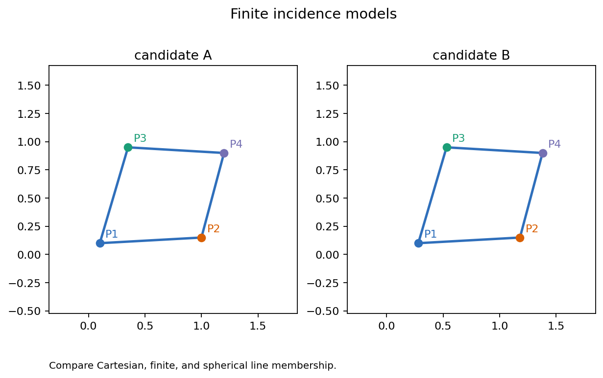
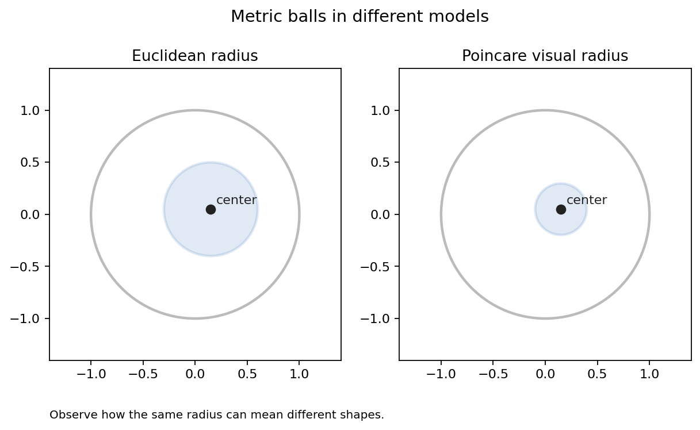
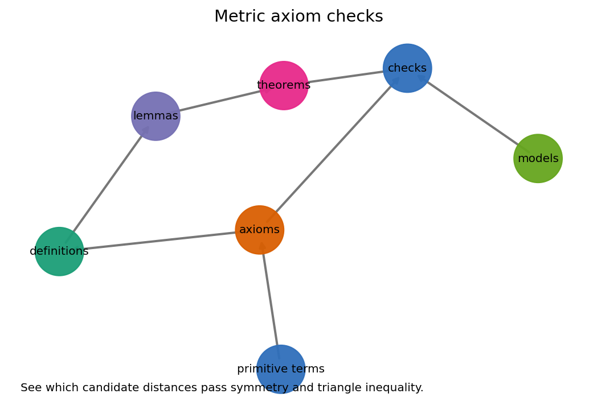
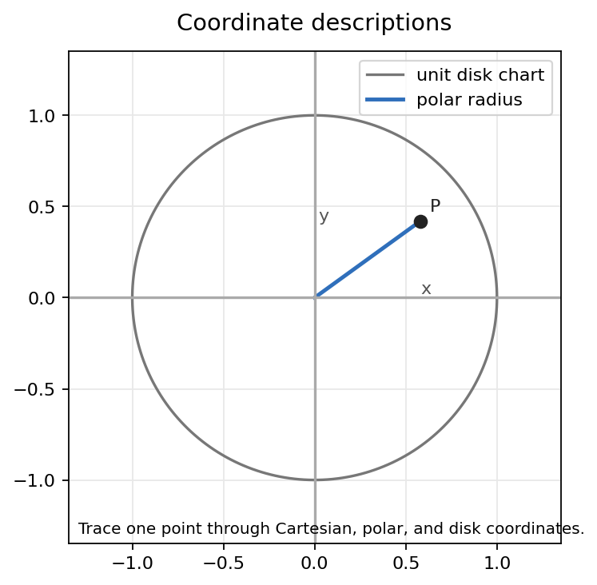

What changes when lines are first only incidence objects and then become objects with distance?
Lines are sets of points. The primary statement is \(P \in \ell\), not length, angle, or betweenness.
A candidate function \(d\) becomes a metric only after the axioms survive point-by-point checks.
Cartesian, polar, and disk descriptions make predicates computable without replacing the model.
An incidence model has a point set \(X\), a family of lines \(\mathcal L\), and a membership predicate \(P \in \ell\).

Artifact: incidence-models-side-by-side.png. Inspect which point-line memberships are actually being asserted.
A diagram can fail by missing a line, putting too few points on a line, or allowing two different lines through the same point pair. None of these failures needs a ruler.
A function \(d:X\times X\to \mathbb R\) is a metric when all points \(P,Q,R\in X\) satisfy:
A formula that returns a nonnegative number is not automatically a metric. The triangle inequality is often where plausible candidates fail.

Artifact: metric-balls-compare.png. The inspection target is the relation between the model boundary, center, and measuring rule.
Visual size is evidence, not proof. The rule \(d\) decides the ball; the drawing is only an interface for inspecting it.

Artifact: metric-axiom-checks.png. Model claims depend on definitions, axioms, and explicit checks.
On the real line, the squared rule \(\delta(x,y)=(x-y)^2\) fails the triangle inequality:
Testing examples can find failures quickly. A proof is still needed to certify all triples of points in the model.

Artifact: coordinate-system-atlas.png. One point can move through Cartesian, polar, and disk descriptions.
| Formula habit | Model check |
|---|---|
| slope \(m\) | Vertical lines need a line equation or parameter. |
| polar angle \(\theta\) | Angles repeat; coordinates can be many-to-one. |
| disk radius | The boundary may be visible but excluded from the model. |
This form handles vertical and nonvertical lines uniformly.
The equivalence relation is part of the coordinate system.
In this tiny affine plane, each line has exactly two points, and each pair of distinct points determines exactly one line.
No length has been assigned. The picture supports incidence claims only until a metric is added and checked.
It is nonnegative and symmetric, but the triple \(0,1,2\) breaks the triangle inequality.
The chapter saves a parameter lab for changing examples and recording observations:
Records what touches what through the predicate \(P\in\ell\). It does not yet measure length, angle, or betweenness.
Adds distance through a rule \(d\) that must satisfy the metric axioms for every relevant point sample.
Translate geometric predicates into computable equations while carrying domain restrictions and identifications.
Next move. Betweenness and elementary figures add order along lines, letting segments, rays, angles, and triangles become formal objects rather than only drawn shapes.